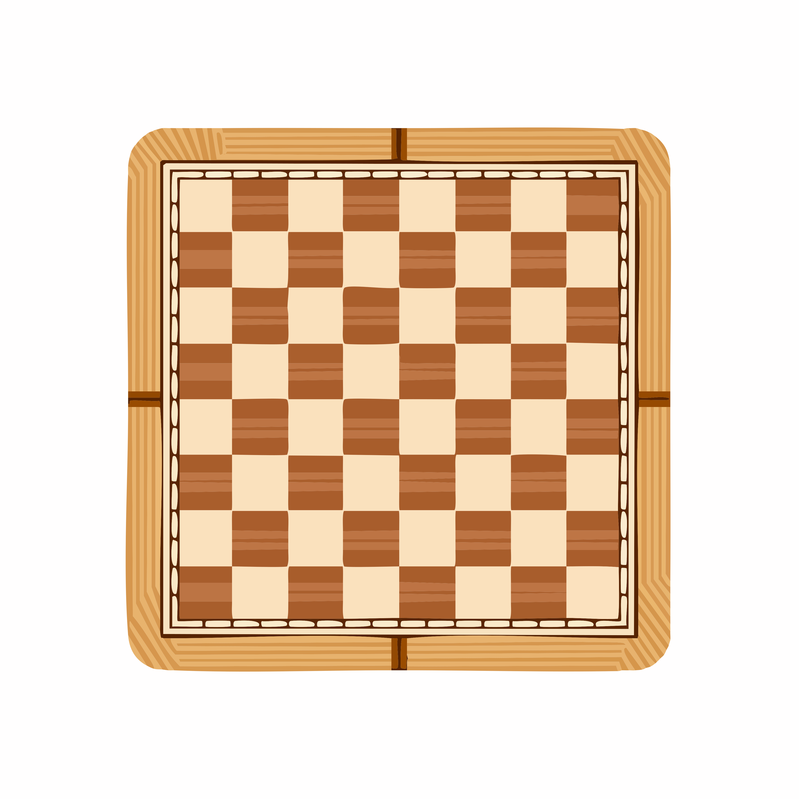
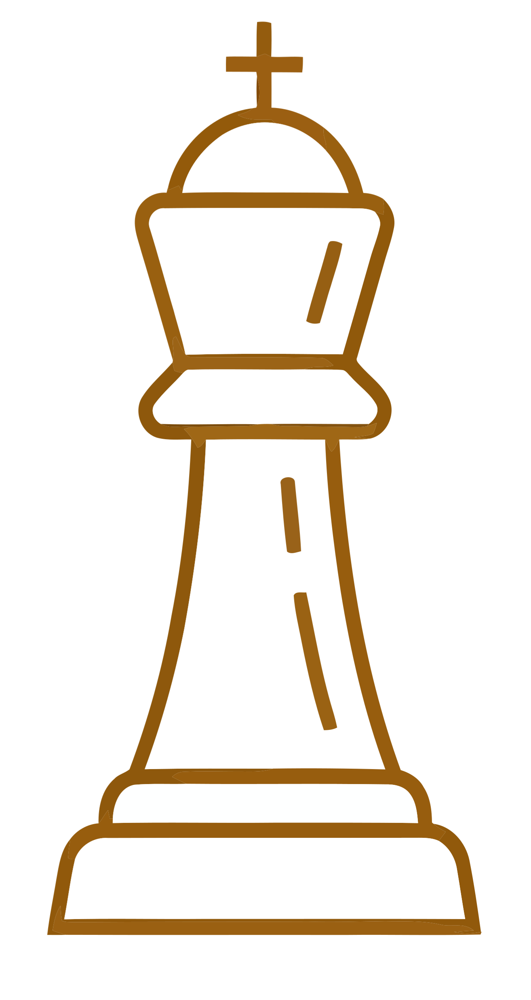
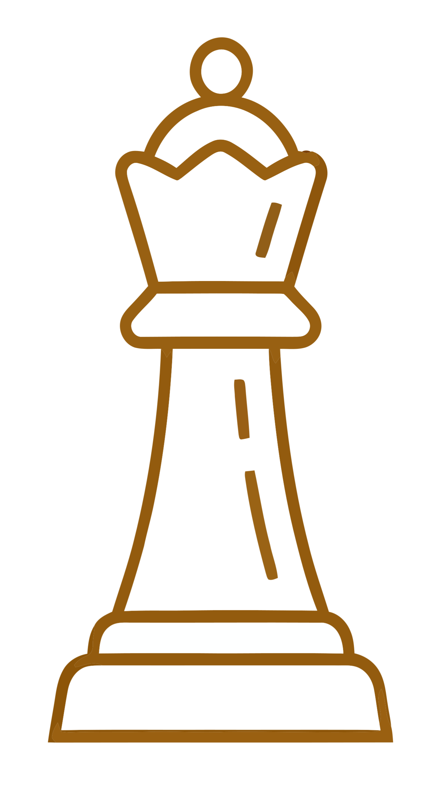
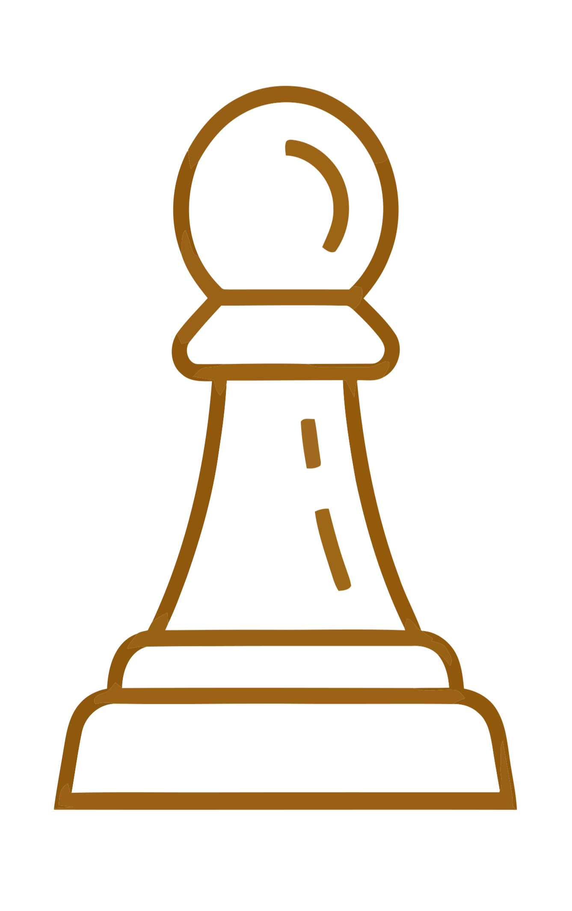
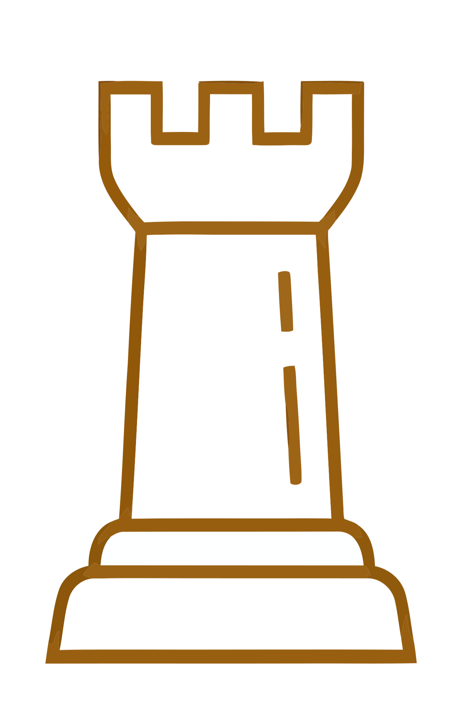
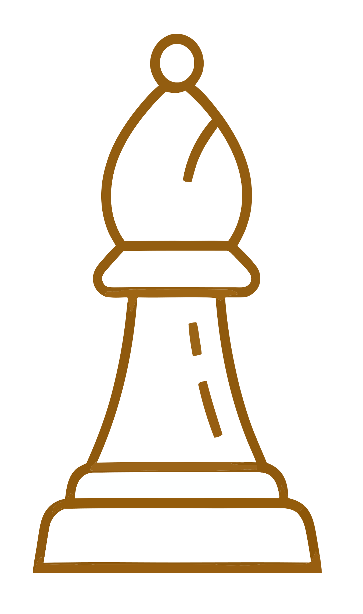
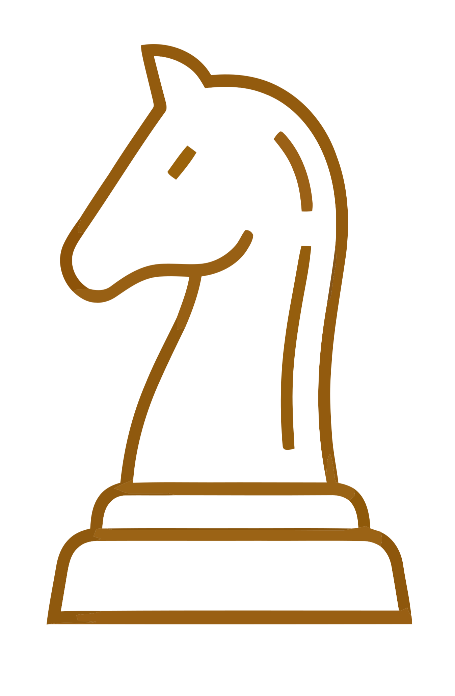
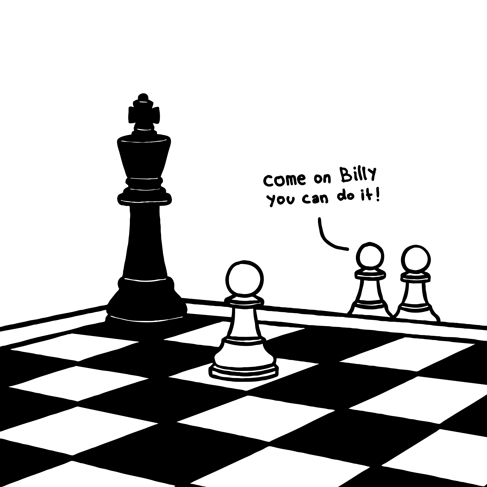

Apprendre à jouer

Les échecs sont un jeu de stratégie qui oppose deux joueurs sur un plateau de 64 cases. Chaque joueur dispose de 16 pièces, chacune ayant une manière de se déplacer qui lui est propre. L'objectif est de mettre le roi adverse en échec et mat, c'est-à-dire dans une position où il ne peut plus échapper à une capture. Ce jeu demande de la réflexion, de l'anticipation et de la concentration, car chaque coup peut influencer le reste de la partie.

Le Roi
Le roi est la pièce la plus importante du jeu. Il peut se déplacer d'une seule case dans toutes les directions : horizontalement, verticalement ou en diagonale. L'objectif principal est de protéger son roi tout en essayant de mettre celui de l'adversaire en échec et mat. Si le roi est menacé, il doit obligatoirement se mettre en sécurité.

La Reine
La reine est la pièce la plus puissante des échecs. Elle peut se déplacer d'autant de cases qu'elle le souhaite, horizontalement, verticalement ou en diagonale, tant qu'aucune autre pièce ne bloque son chemin. Grâce à sa grande mobilité, elle est très utile pour attaquer et défendre.

Le Pion
Le pion est la pièce la plus nombreuse. Il avance d'une case vers l'avant, mais peut avancer de deux cases lors de son tout premier déplacement. Pour capturer une pièce adverse, il se déplace d'une case en diagonale. Lorsqu'un pion atteint la dernière rangée du plateau, il est promu et peut être transformé en reine, tour, fou ou cavalier, selon le choix du joueur.

La Tour
La tour se déplace en ligne droite, horizontalement ou verticalement, sur autant de cases qu'elle le souhaite. Elle est particulièrement efficace pour contrôler les colonnes et les rangées du plateau. Les deux tours peuvent également participer au roque avec le roi, un coup spécial permettant de mieux protéger le roi.

Le Fou
Le fou se déplace uniquement en diagonale sur autant de cases qu'il le souhaite. Chaque fou reste toujours sur la couleur de case sur laquelle il commence la partie : un fou sur les cases blanches et l'autre sur les cases noires. Il est très efficace pour contrôler de longues diagonales.

Le Cavalier
Le cavalier est une pièce unique, car il se déplace en formant un « L » : deux cases dans une direction, puis une case sur le côté. C'est la seule pièce qui peut sauter par-dessus les autres. Son déplacement particulier en fait une pièce très utile pour surprendre l'adversaire.

Les échecs sont bien plus qu'un simple jeu : ils développent la réflexion, la patience et le sens de la stratégie. En appliquant les règles et en s'entraînant régulièrement, chacun peut progresser et prendre plaisir à relever de nouveaux défis. Que la partie commence, et surtout, amusez-vous !